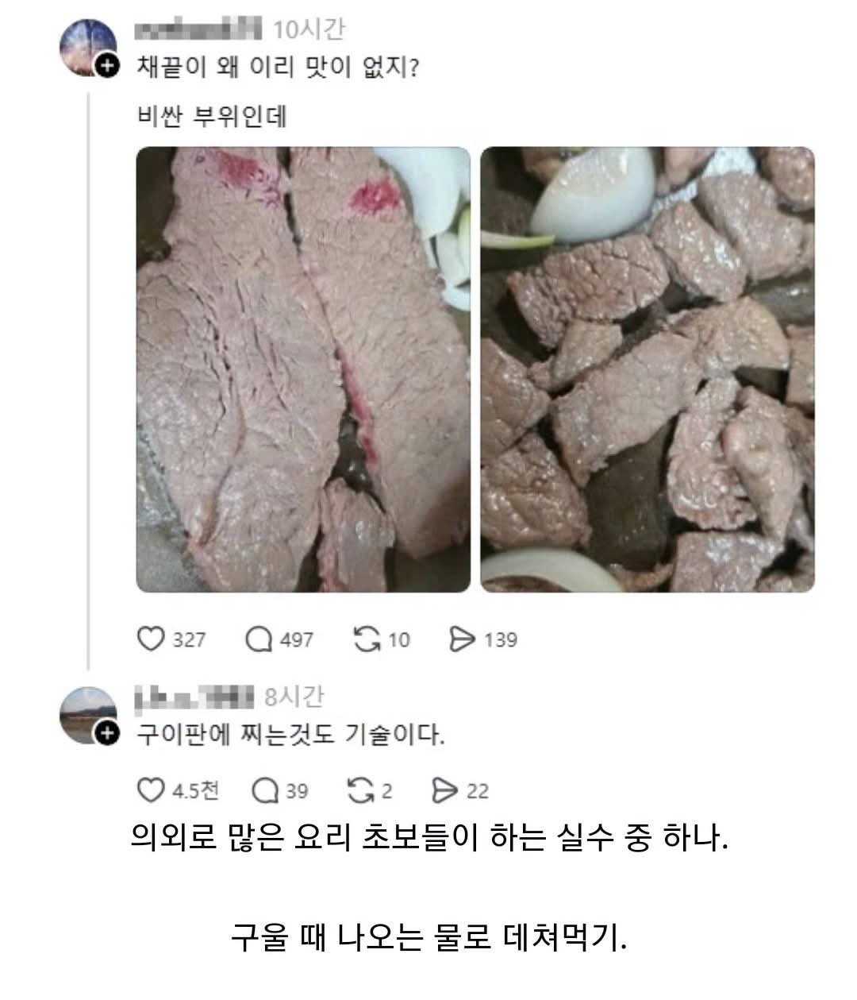

맛있는 고기는 뭘해도 마싰음
아무리 그래도 저건 좀
태워먹어도?
그건 못먹는거
닉에서신뢰도가느껴짐
아님;;;,,,,
1. 최소 30분 전에 냉장고에서 꺼내둬서 상온과 온도 맞춰두기
2. 팬을 충분히 달군 상태로 고기 올리기
3. 팬에 따로 기름을 두르지 않 거나 스텐팬을 쓰는 경우엔 고기가 팬과 닿은 면에서 나온 기름으로 자연스럽게 떼질 때 까지 기다렸다 뒤집기
4. 가니쉬는 고기를 다 굽고나서 따로굽기
일케만 해도 고기 잘 굽더라
굽기전에 고기표면 키친타월로 수분 닦아주기
1번해서 핏물나오면 닦아 아님 둬?
닦아 젖은표면은 노릇해지지 않음
마이야르가 일어나려면 뜨거운 팬과 고기 사이에 수분이 없어야함 그래서 고기 꺼내놓고 팬에 올리기 직전에 키친타월로 수분 닦아주고 올리면 맛있는 갈색빛이 나면서 감칠맛이 남
핏물이 나온거면 팬 온도가 낮은듯
꿉기전말한거여써
후라이팬에 고기 굽는데
고기집 화력 불판 생각하고 오만가지 야채 같이 넣어서 조지는 경우 많더라 ㅋㅋㅋ
1번 큰 의미(효과)없고 신선도만 떨어진다고 들었는데...
나두 그렇게 듣긴 했음 뭐 한국에서만 그러고 외국 주방은 안그러더라 유튜브에서 카던데 암만 해야 유튜버니 아닐 수도 잇지
신선도는 딱히 모르겠지만.. 표면수분날리는용도라 원래 소금치고 냅둬야됨. 할꺼면
냉장고 밖에 꺼내는 건 그런 목적이 아님 온도 올리는 목적임(의미없는 수준이지만) 그리고 소금은 30분은 좀 애매함;;
엥 수분말고 심부온도올리는건 가열상태따른거라 차이가엄써.. 왜냐면 노출시간조절하면땡이라서.. 나도 풀드포크나 브리스킷할때 꺼내두긴하는대 비교유튜브나 이런거봐도 결국 표면갈변시점을 빨리가져가는게 이점임.
ㅇㅇ
씹었을 때 물 질컹 나오거나 삶아놓은 것 처럼 퍽퍽 핏물 탄 잡내 맛소금으로 간하면 환장의 콜라보
저렇게 구을거면 간장불고기를 하는 게 나을듯
수육하나
존나 많이 구워봐라 그럼 저절로 알게된다ㅋㅋ
야채 같은 가니시를 불판에 같이 구울 때 제일 원칙은 고기는 맨 위에, 야채는 기름이 흘러가는 아래에 둬야 함.
야채가 위에 있거나 고기와 같이 있으면 야채에서 흘러나오는 물로 고기를 쪄먹는 불상사가 생김.
간단하게 생각해서 김치가 맨 위에 있고 그 밑에 삼겹살이 있다고 생각하면 됨.
나쁜말 하고 싶다
첫번째사진의 왼쪽부위는 맛없는채끝부위인걸 감안해도.. 이건좀
난 고기를 안먹어서 저 짤 봐도 이해를 못했네 .고기 굽는 연륜이 쌓이면 다들 전문가의 경지에 이르나 보구만.
30분전에 밑간해서 냉장고 밖에 두고 굽기전에 키친타월로 꼼꼼히 닦아주면 마이야르 잘남
1. 굽기전 꼼꼼하게 고기 표면의 물기를 제거함.
1-1. 더하자면, 한번 싹 닦아내고 고기표면에 소금을 적당히 치고 키친타올로 한두겹 빡빡하게 감아서 냉장고에 1시간이상 넣어두고 꺼내서 다시한번 꼼꼼하게 물기제거하면 더 좋음.
2. 소고기도 돼지고기도 무조건 기름을 치는게 맛있음. 기름을 치면 완전히 평평하지 않은 고기 표면이 팬에서 뜨는 그 공간에 기름이 채워져서 마이야르를 더 잘 일어나게함.
어차피 기름지고 느끼한고기 식용유 좀 더 친다고 더 느끼하지 않고 더 맛있음.
3. 가장센불에 팬을 올려놓고 연기가 날 정도로 달궈지면 기름 한바퀴 두르고 고기 올리고 10~20초 정도 있다가 불을 살짝 줄여주셈.
이정도만 해도 충분히 맛있음.

돼지 색이 나네요 한번 삶았냐
살짝 태우듯 굽고 소금간하면 고기는 다 맛있어
진짜 봐도 봐도 존나 신기하게 구웠네
만두처럼 찐거마냥
ㅈ같다
팬 가득쓰지말고 절반만 쓴다 생각해야됨
고기를 한 번에 많이만 안 올려도 웬만큼 구워지는데
고기팁미쳤네
중간에 조각보면 마블링 잘들어가서 그래도 안질기고 괜찮을거같은데 뭐 살살 녹는거 기대했나
불판 온도가 존나 낮은거 같은데
고기에서 물이 나와도 지글지글하면서 다 증발하지 저렇게 되질 않음
내가 저게 싫어서 소고기는 항상 그릴과 숯불에 구워먹지
저지랄 나는 이유 딱 하나임 ㅋㅋ 기름 튄다고 약불에 놓고 천천히 구워서 저지랄남 ㅋㅋㅋ 불 쎄게해서 구워야한다하면 기름튄다고 지랄하고 불 한칸 올림 ㅋㅋㅋㅋ그러고 기름튀면 봐바 기름튀잖아! 불 낮춰라고 지랄함 ㅋㅋㅋㅋ
그런 당신을 위해 콜드시어링을 추천합니다
30분전에 꺼내고 그럴 것도 없음 물기 닦고 고깃집마냥 야채랑 같이 굽고 이지랄 안 하고 팬 뜨겁게 달구고 기름 약간만 두르고 구우면 됨
어떻게 저렇게 구울 수 있는거지...??
육즙이라고 그냥 그대로 찌는 놈들 있는데 꿀밤 마려움.
나도 요알못이라 저지랄로 먹다가 입질암컷아저씨가 알려준대로 꽃소금뿌려서 삼투압 내고 수분기 쫙쫙 빨아들인다음 닦아내고 구우니 내가 지금까지 소고기쳐먹는다고생돈을날렸구나 싶더라
그래서 걍 중간에 부지런히 물기제거 하면서 함. ㅠ
마지막에 버터물 끼얹기